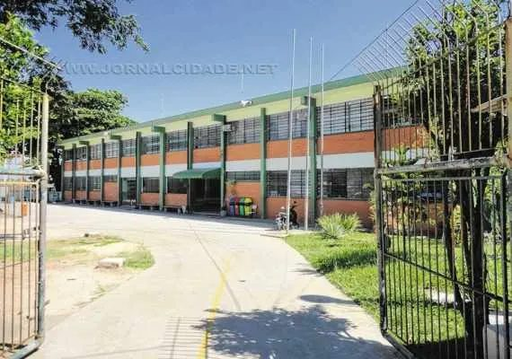
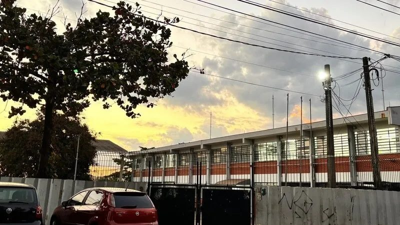

Organização Administrativa
Melhorar a divisão de responsabilidades, o planejamento interno e a coordenação dos projetos gremistas.
NOSSA ESCOLA. NOSSO FUTURO.
A FORÇA TAREFA busca valorizar os talentos dos estudantes, criar oportunidades e transformar ideias em melhorias reais para nossa escola.

IDEIAS PARA COMEÇAR
Cinco prioridades e uma proposta já aprovada pela gestão. Cada ideia começa com participação e planejamento.
NOSSA MISSÃO
Mais oportunidades para os alunos. Mais participação. Uma escola melhor.
A FORÇA TAREFA tem como missão ajudar os estudantes a desenvolver seus talentos, transformar ideias em oportunidades e participar ativamente da construção de uma escola melhor.
Queremos aprimorar o que já existe, criar novas possibilidades e fazer com que os alunos tenham voz, reconhecimento e oportunidades reais.
Acreditamos em uma escola que ajuda cada estudante a descobrir suas capacidades, construir projetos e preparar seu futuro.
Valorizar talentos e abrir caminhos para os estudantes.
Melhorar o conforto e a convivência escolar.
Transformar ideias dos alunos em projetos reais.
Planejar ações, evitar desperdícios e acompanhar resultados.
NOSSA HISTÓRIA
De um grupo de amigos a um projeto que busca transformar a escola. Conheça a trajetória da FORÇA TAREFA.
O primeiro nome escolhido foi “Desorganização”, uma referência bem-humorada à inspiração inicial em algumas ideias do Partido Missão, invertendo o conceito de organização.
Era um começo descontraído, ainda sem a estrutura que o projeto desenvolveria. Essa referência não representa filiação partidária nem apoio oficial.
Ao compreender melhor as atribuições do Grêmio Estudantil, o grupo percebeu que precisava tratar o projeto com maior seriedade.
Surgiu então o nome “Tarefa”, representando compromisso, objetivos e disposição para agir.
O nome Tarefa foi reconsiderado devido ao desconforto que poderia causar a alguns estudantes. Assim nasceu a FORÇA TAREFA.
A nova identidade representa a união de estudantes para enfrentar problemas, organizar iniciativas e melhorar a escola. A equipe também passou por mudanças, buscando mais compromisso e responsabilidade.
Com o desenvolvimento das propostas, a FORÇA TAREFA começou a discutir também o funcionamento da própria representação estudantil.
Desse processo surgiu o FT+ (Força Tarefa Plus!), um projeto para reformular a organização, a transparência e os mecanismos de participação do Grêmio.
A FORÇA TAREFA nasceu durante uma assembleia escolar, quando um grupo de amigos resolveu participar das eleições do Grêmio. O primeiro nome, “Desorganização”, expressava o tom bem-humorado do início: algumas ideias do Partido Missão serviram de inspiração, com uma inversão do conceito de organização. Essa referência inicial não significa filiação partidária ou apoio oficial.
Conhecer as atribuições da representação estudantil mudou a maneira de encarar o projeto. A brincadeira passou a exigir compromisso, planejamento e objetivos. O nome “Tarefa” marcou esse amadurecimento.
Depois, o grupo reconsiderou o nome devido ao desconforto que poderia causar a alguns estudantes. A identidade FORÇA TAREFA passou a representar uma união para enfrentar problemas e organizar iniciativas em benefício da escola. A equipe também mudou em busca de maior responsabilidade.
Ao desenvolver as propostas, a chapa percebeu que também queria discutir a forma de organizar e acompanhar as ações do Grêmio. Dessa reflexão nasceu o FT+, com a intenção de ampliar a participação, melhorar a transparência e tornar a administração mais organizada. É um projeto em construção, sujeito às normas e decisões dos órgãos responsáveis.
FORÇA TAREFA PLUS!
Não queremos apenas apresentar propostas. Queremos melhorar a maneira como o Grêmio funciona.
O FT+ nasceu da insatisfação da FORÇA TAREFA com aspectos do atual sistema de organização e apoio estudantil. Propomos uma administração mais participativa, transparente e organizada, com melhor comunicação e acompanhamento das ideias dos alunos.
Melhorar a divisão de responsabilidades, o planejamento interno e a coordenação dos projetos gremistas.
Divulgar propostas encaminhadas, respostas recebidas, recursos utilizados e resultados alcançados.
Ampliar os mecanismos para que os estudantes possam sugerir, discutir e participar das decisões do Grêmio.
Planejar despesas, comparar preços, reaproveitar recursos e evitar desperdícios nos projetos.
Estabelecer metas, acompanhar o andamento das iniciativas e avaliar quais ações realmente beneficiam os estudantes.
As cinco diretrizes orientam uma proposta de revisão das práticas administrativas, da comunicação e dos mecanismos de análise e acompanhamento das ideias estudantis. O planejamento interno deve definir responsabilidades e metas; a transparência deve permitir acompanhar encaminhamentos e resultados; e a participação deve aproximar as decisões dos estudantes.
Economia e responsabilidade devem orientar a busca e o uso de recursos. A gestão por resultados deve ajudar a avaliar se as ações beneficiam os alunos e quais ajustes são necessários.
O FT+ ainda é um projeto da chapa. Suas medidas não estão implementadas e não podem alterar unilateralmente regras do Grêmio ou da escola. As propostas deverão respeitar as normas do Grêmio Estudantil Paulista, o regimento escolar e as decisões que dependem dos órgãos responsáveis.
Compartilhe uma ideia para o FT+Projeto da chapa, sujeito a planejamento, normas e autorizações. Novas informações serão publicadas quando forem confirmadas.
NOSSO PLANO COMPLETO
Explore as propostas oficiais. Encontre os temas que fazem parte do seu dia a dia.
Prioridade: uma das cinco propostas centrais da chapa.
Início do mandato: primeiras ações planejadas para um eventual mandato, caso a chapa seja eleita. Não significa que já começaram ou que serão concluídas imediatamente.
Aprovada pela gestão: autorização recebida, separada do andamento real. Uma proposta pode ter as duas etiquetas.
Carregando propostas…

UM COMPROMISSO COM O NOSSO DIA A DIA
Ouvir os estudantes, conversar com a gestão e apoiar projetos viáveis. É assim que queremos transformar as propostas em oportunidades reais.
Cada melhoria precisa de organização, cuidado e participação.
PARTICIPAÇÃO E PROJETOS
Acompanhe iniciativas autorizadas, oportunidades e planejamento. Projetos da chapa dependem de organização e aprovação.
Ideias analisadas e encaminhamentos públicos autorizados.
Trabalhos voluntários, revisados e autorizados para publicação.
Atividades, regras e participação quando forem confirmadas.
Metas, planejamento, economia, resultados e participação.
Marasca Com Amor na Natureza. As cinco propostas para a agrofloresta.
Tire suas dúvidas sobre a FORÇA TAREFA e nossos projetos.
QUEM SOMA COM A GENTE
Estudantes unidos por mais ideias, mais oportunidades e uma escola melhor.
Os nomes da equipe serão publicados aqui quando forem cadastrados e autorizados.
A PRÓXIMA IDEIA PODE SER SUA
Tem alguma proposta, melhoria ou projeto em mente? Conte para a FORÇA TAREFA.
Nome e turma são opcionais. As sugestões ficam disponíveis somente para a gestão autorizada da chapa e não serão publicadas automaticamente. Não envie telefone, endereço, dados sensíveis ou informações pessoais de outras pessoas.
Para situações urgentes ou delicadas, procure um profissional responsável da escola.
Como protegemos sua participaçãoSUA VOZ TAMBÉM É APOIO
Registre sua intenção de voto. Este registro é voluntário e não substitui a votação oficial da escola.
TRANSPARÊNCIA
Queremos acompanhar cada ação e divulgar o que foi planejado, encaminhado, aprovado e realizado, incluindo as respostas da gestão e o uso de recursos quando houver.
As propostas dependem de viabilidade, recursos e autorizações. Aprovação e realização são etapas diferentes.
A proposta de uma turma sair cinco minutos mais cedo a cada semana, seguindo um rodízio, já recebeu aprovação da gestão. Sua implementação ainda deve ser organizada.
PROPOSTA 08Conhecer a propostaUse o espaço de participação para compartilhar ideias com a chapa.